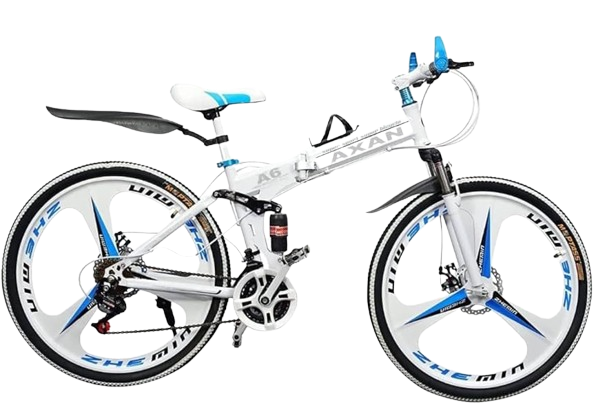
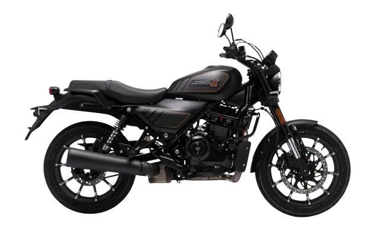
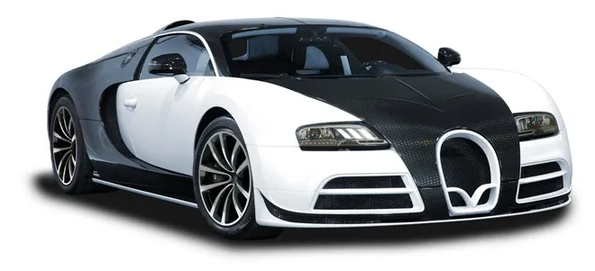
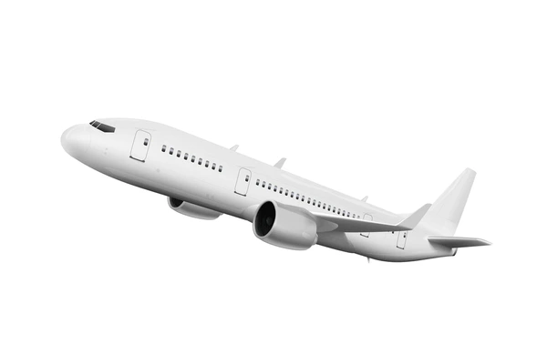

Bicycle

SA bicycle, also called a pedal cycle, bike, push-bike or cycle, is a human-powered or motor-assisted, pedal-driven, single-track vehicle, with two wheels attached to a frame, one behind the other. A bicycle rider is called a cyclist, or bicyclist.
Bicycles were introduced in the 19th century in Europe. By the early 21st century there were more than 1 billion bicycles. There are many more bicycles than cars.Bicycles are the principal means of transport in many regions. They also provide a popular form of recreation, and have been adapted for use as children's toys. Bicycles are used for fitness, military and police applications, courier services, bicycle racing, and artistic cycling.
The basic shape and configuration of a typical upright or "safety" bicycle, has changed little since the first chain-driven model was developed around 1885.However, many details have been improved, especially since the advent of modern materials and computer-aided design. These have allowed for a proliferation of specialized designs for many types of cycling. In the 21st century, electric bicycles have become popular.
Motorcycle

A motorcycle (motorbike, bike, or, if three-wheeled, a trike) is a two or three-wheeled motor vehicle steered by a handlebar from a saddle-style seat.
Motorcycle design varies greatly to suit a range of different purposes: long-distance travel, commuting, cruising, sport (including racing), and off-road riding. Motorcycling is riding a motorcycle and being involved in other related social activities such as joining a motorcycle club and attending motorcycle rallies.
The 1885 Daimler Reitwagen made by Gottlieb Daimler and Wilhelm Maybach in Germany was the first internal combustion, petroleum-fueled motorcycle. In 1894, Hildebrand & Wolfmüller became the first series production motorcycle.
Globally, motorcycles are comparably popular to cars as a method of transport. In 2021, approximately 58.6 million new motorcycles were sold around the world, fewer than the 66.7 million cars sold over the same period.
In 2022, the top four motorcycle producers by volume and type were Honda, Yamaha, Kawasaki, and Suzuki. In developing countries, motorcycles are considered utilitarian due to lower prices and greater fuel economy. Of all the motorcycles in the world, 58% are in the Asia-Pacific and Southern and Eastern Asia regions, excluding car-centric Japan.
car

A car, or an automobile, is a motor vehicle with wheels. Most definitions of cars state that they run primarily on roads, seat one to eight people, have four wheels, and mainly transport people, not cargo.
French inventor Nicolas-Joseph Cugnot built the first steam-powered road vehicle in 1769, while French-born Swiss inventor Francois Isaac de Rivaz designed and constructed the first internal combustion-powered automobile in 1808. The modern car-a practical, marketable automobile for everyday use—was invented in 1886, when German inventor Carl Benz patented his Benz Patent-Motorwagen. Commercial cars became widely available during the 20th century. One of the first cars affordable by the masses was the 1908 Model T, an American car manufactured by the Ford Motor Company. Cars were rapidly adopted in the US, where they replaced horse-drawn carriages. In Europe and other parts of the world, demand for automobiles did not increase until after World War II. The car is considered an essential part of the developed economy.
Cars have controls for driving, parking, passenger comfort, and a variety of lamps. Over the decades, additional features and controls have been added to vehicles, making them progressively more complex. These include rear-reversing cameras, air conditioning, navigation systems, and in-car entertainment. Most cars in use in the early 2020s are propelled by an internal combustion engine, fueled by the combustion of fossil fuels. Electric cars, which were invented early in the history of the car, became commercially available in the 2000s and are predicted to cost less to buy than petrol-driven cars before 2025.[5][6] The transition from fossil fuel-powered cars to electric cars features prominently in most climate change mitigation scenarios, such as Project Drawdown's 100 actionable solutions for climate change.
Train

A train (from Old French trahiner, from Latin trahere, "to pull, to draw") is a series of connected vehicles that run along a railway track and transport people or freight. Trains are typically pulled or pushed by locomotives or railcars (often known simply as "engines"), though some are self-propelled, such as multiple units. Passengers and cargo are carried in railroad cars, also known as wagons. Trains are designed to a certain gauge, or distance between rails. Most trains operate on steel tracks with steel wheels, the low friction of which makes them more efficient than other forms of transport.
Trains have their roots in wagonways, which used railway tracks and were powered by horses or pulled by cables. Following the invention of the steam locomotive in the United Kingdom in 1802, trains rapidly spread around the world, allowing freight and passengers to move over land faster and cheaper than ever possible before. Rapid transit and trams were first built in the late 1800s to transport large numbers of people in and around cities. Beginning in the 1920s, and accelerating following World War II, diesel and electric locomotives replaced steam as the means of motive power. Following the development of cars, trucks, and extensive networks of highways which offered greater mobility, as well as faster airplanes, trains declined in importance and market share, and many rail lines were abandoned. The spread of buses led to the closure of many rapid transit and tram systems during this time as well.
Since the 1970s, governments, environmentalists, and train advocates have promoted increased use of trains due to their greater fuel efficiency and lower greenhouse gas emissions compared to other modes of land transport. High-speed rail, first built in the 1960s, has proven competitive with cars and planes over short to medium distances. Commuter rail has grown in importance since the 1970s as an alternative to congested highways and a means to promote development, as has light rail in the 21st century. Freight trains remain important for the transport of bulk commodities such as coal and grain, as well as being a means of reducing road traffic congestion by freight trucks.
Flight

Flight or flying is the process by which an object moves through a space without contacting any planetary surface, either within an atmosphere (i.e. air flight or aviation) or through the vacuum of outer space (i.e. spaceflight). This can be achieved by generating aerodynamic lift associated with gliding or propulsive thrust, aerostatically using buoyancy, or by ballistic movement.
Many things can fly, from animal aviators such as birds, bats and insects, to natural gliders/parachuters such as patagial animals, anemochorous seeds and ballistospores, to human inventions like aircraft (airplanes, helicopters, airships, balloons, etc.) and rockets which may propel spacecraft and spaceplanes.
The engineering aspects of flight are the purview of aerospace engineering which is subdivided into aeronautics, the study of vehicles that travel through the atmosphere, and astronautics, the study of vehicles that travel through space, and ballistics, the study of the flight of projectiles.